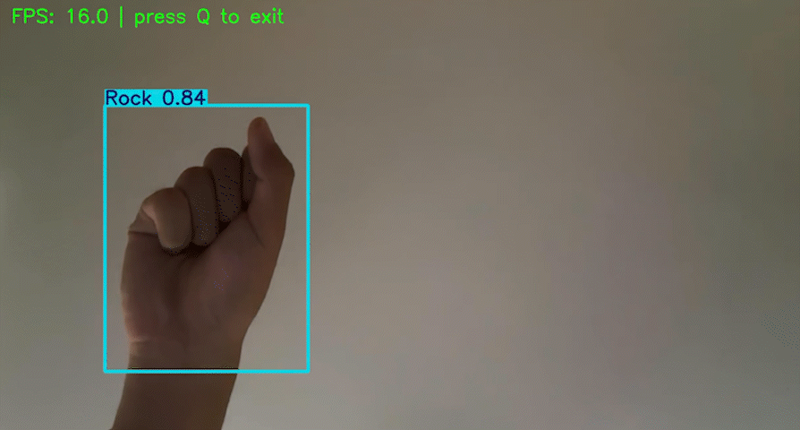

Rock Paper Scissors
2026 暑期 Python 课程实践合集，把“编程基础 → 结构化数据分析 → 计算机视觉检测”串成一条完整进阶路线：涵盖 14 项语法练习、加州房价随机森林回归、学生数字行为多模型分析，以及验证集 mAP50 达 0.940 的 YOLO11n 实时手势识别。

课程实践路线
每个阶段均沉淀了独立的数据处理脚本、训练配置与可复核评估指标，点击下方卡片可跳至对应章节查看细节。
Project 1 · Python 程序设计基础
零第三方依赖的入门级语法训练，通过 14 个独立脚本打牢数值计算、逻辑分支与数据结构基础。
1.1.py 正整数平方 · 1.2.py 格式化输出录取信息 · 1.3.py 直角三角形斜边长求解
2.1.py 两点间欧几里得距离 · 2.2.py 三位数各位立方和 · 2.3.py 字母出现次数统计（不区分大小写）
3.1–3.2 成绩等级与字符类型判断 · 4.1–4.2 位数拆解与阶乘求和 · 5.1–5.2 函数封装与数学计算 · 6.1–6.2 列表推导式与字典映射
Project 2-1 · 加州房价预测
使用 scikit-learn 随机森林回归（Random Forest Regressor）建模 California Housing 数据集，分析区域房价的影响权重。
数据集概览
采用 scikit-learn 内置的 California Housing 数据集，共计 20,640 条街区记录、8 个数值特征（含收入中位数 MedInc、房龄 HouseAge、平均房间数、人口、平均居住人数 AveOccup 及经纬度位置等），预测目标为房价中位数 MedHouseVal（单位 $100K）。
特征重要性 Top 4
权重排序为 MedInc（收入中位数）> AveOccup（平均居住人数）> Latitude / Longitude（地理位置）> HouseAge。收入水平是决定房价的最核心预测因子，地理坐标紧随其后反映区域级差。
| 回归评估指标 | 测试结果 | 指标说明 |
|---|---|---|
| MSE | 0.2552 |
均方误差 |
| RMSE | 0.5052 |
均方根误差（约对应 $50.5K 误差量级） |
| R² Score | 0.8053 | 决定系数（模型解释超过 80% 方差） |
Project 2-2 · 学生数字行为与学习表现分析
基于 Kaggle 真实数据集探究生活习惯与学业成绩（CGPA）之间的关联，开展数据清洗、探索性可视化与线性回归 / 随机森林对比。
数据集定义与特征约定
- 数据源：Kaggle Student Lifestyle and Academic Performance
- 原始涵盖 12 字段：
Age、Branch、Study_Hours、Sleep_Hours、Screen_Time、Gym、Diet、Attendance、Stress、Residence、Internal_Marks与CGPA - 预测目标：
CGPA（绩点，0~10 分制），建模时主动剔除Internal_Marks以避免数据泄漏
五步数据清洗流水线
- 核心字段筛选与重复样本去重
- 数值字段采用中位数填补缺失项
- 分类字段使用众数填充
- 按合理区间过滤年龄、学习时长等极端异常值
- 对分类变量执行
drop_first独热编码
Project 3 · YOLO11n 石头剪刀布手势识别
采用 Ultralytics YOLO11n 轻量级目标检测模型训练三类手势识别器，在验证集获得 0.940 mAP50，测试集获得 0.934 mAP50（复现需搭配课程源码及训练权重文件）。
Roboflow v11 数据集
- 名称：rock-paper-scissors-sxsw（总计
15,874张图像） - 划分：训练集 14,966 张 / 验证集 588 张 / 测试集 320 张
- 三类标签：Paper（布）、Rock（石头）、Scissors（剪刀）
- 统一输入尺寸：
640 × 640
离线数据增强（7×）
对每张原始图片扩展生成 7 组增强样本以提升光照与视角鲁棒性：
- 50% 概率水平翻转，±12° 随机旋转，±2° 随机剪切
- ±25% 亮度与曝光扰动
- 0~1.5px 高斯模糊与 1% 椒盐噪声注入
| 训练配置项 | 参数值 |
|---|---|
| 基础网络 | YOLO11n (2.58M params) |
| 训练轮数 | 50 Epochs |
| 批大小 Batch | 16 |
| 优化器 | AdamW |
| 总耗时 | 约 3.07 小时 |
| 训练硬件 | NVIDIA RTX 5060 (8GB) |
| 评估范围 | mAP50 | mAP50-95 / 指标明细 |
|---|---|---|
| 验证集汇总 | 0.940 | mAP50-95: 0.697 · P: 0.942 · R: 0.891 · 单帧 < 2.1ms |
| 测试集汇总 | 0.934 | mAP50-95: 0.693 · P: 0.898 · R: 0.920 |
| Paper（布） | 0.936 / 0.904 | 验证集 mAP50 0.936 · 测试集 mAP50 0.904 |
| Rock（石头） | 0.943 / 0.951 | 验证集 mAP50 0.943 · 测试集 mAP50 0.951 |
| Scissors（剪刀） | 0.940 / 0.947 | 验证集 mAP50 0.940 · 测试集 mAP50 0.947 |